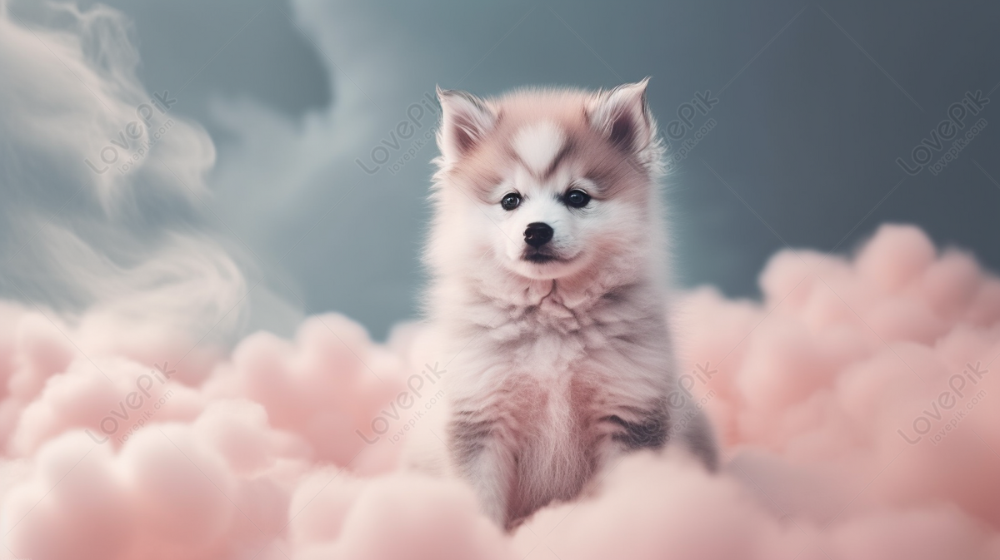

En esta pagina esta dedicada a los amantes peludos. =)
Hoy te mostraremos algunos datos curiosos sobre los gatos y perros que te haran dudar cual amas más.

Si amas los perritos es esta la oportunidad de conocer algunos datos interesantes sobre ellos.

-

- No perciben los sabores salados. La cantidad de papilas gustativas que tienen los perros son bastante menores que las de los seres humanos.
Ellos perciben los sabores dulces, amargos, ácidos y cárnicos
- - Dan vueltas antes de tumbarse. Lo hacen para asegurarse de que no hay peligro a su alrededor y para estar cómodos en el sitio donde van a acostarse.
- -Los perros también sudan, pero lo hacen solamente por las almohadillas de sus patitas.
- - A diferencia de lo que se piensa, los perros ven a colores, aunque no tan nítido como los humanos.
- - La nariz de los perros equivale a su huella dactilar, ¡todas son únicas! Además, por cada fosa nasal captan un olor distinto y tienen la capacidad de diferenciar de dónde proviene cada uno y dónde se encuentra la fuente que los produce.
- - Los perros son capaces de aprender entre 200 y 500 palabras. Se dice que cuentan con unas habilidades mentales próximas a la de un niño de 2 años.
- - Los perros son capaces de enamorarse, su cerebro libera oxitocina (la hormona del amor)
 Si eres amante de los gatos aquí te traemos algunos datos curiosos sobre gatos que haran enamorarte más de tu felino.
Si eres amante de los gatos aquí te traemos algunos datos curiosos sobre gatos que haran enamorarte más de tu felino.
-
-
- Lo gatos se pasan el 70% de su vida durmiendo
-
- Un gato fue alcalde de un pueblo de Alaska durante 20 años.
Un gato atigrado llamado Stubbs fue alcalde de Talkeetna, una pequeña ciudad de Alaska, ¡durante 20 años! Celebró varias elecciones sin oposición y, aunque no ostentaba ningún poder legislativo, era muy apreciado tanto por los lugareños como por los turistas.
-
- El récord del gato más largo de la historia es de 1,2 metros
-
- - El gato más rico de mundo tenia 7 millones de libras
El gato más rico del mundo según el libro Guinness de los récords es Blackie. Cuando falleció su millonario dueño, se negó a incluir a su familia en el testamento y, por eso, le dio su fortuna de 7 millones de libras a Blackie. In-cre-í-ble.
-
- - En 1963 un gato fue al espacio
Seguro que has oído hablar de monos y perros en el espacio, pero ¿sabías que un gato también se adentró en lo desconocido? El 18 de octubre de 1963, Felicette, también conocida como «Astrocat», fue la primera y única gata que fue al espacio.
-
- - Los antiguos egipcios se afeitaban las cejas cuando se le moría el gato
Según la Enciclopedia de Historia Antigua, Heródoto escribió en el año 440 a.C. que, en el Antiguo Egipto, cuando moría un gato, los miembros de la familia se afeitaban las cejas en señal de duelo. ¡Eso sí que es un dato interesante sobre los gatos!
-
- - Los gatos domésticos comparten el 95,6 % de su composición genética con los tigres.

En esta pequeña encuesta deja cual prefieres más, perritos o gatitos o otras mascotas